Imagem: Lucky Duck Games · edição em inglêsAlocação de trabalhadores · Construção de motor
Como jogar Andromeda's Edge
Para quem nunca jogou2 a 4 jogadores40 a 200 min14+Edição Galápagos
· Redação Elite Boardgamers
Resumo em 1 minuto
Você Lança naves para colher luas, usar as Bases Aliadas e desenvolver planetas, depois as traz de volta para ativar os módulos da estação; quando alguém alcança o terminus, todos jogam mais um turno e vence quem tiver mais PV na pontuação final.
No seu turno, você Lança uma nave para uma região e a ativa, ou Retorna à Estação com todas as naves para ativar módulos.
Cada módulo recebido e cada desenvolvimento construído sobem uma trilha de progresso, que paga bônus na partida e PV no fim.
Batalha compara o maior dado de cada lado; mais naves na região sobem a mira, o mínimo que cada dado pode mostrar.
Como você aprende: 5 etapas, da mesa montada à contagem de pontosLeitura do essencial: cerca de 13 min
À vista, só o essencial para jogar. O que abre com + é explicação, exemplo, exercício ou regra de caso especial: abra quando precisar.
Montar a mesa passo a passo
Segue a preparação do manual (p. 4 a 7), na mesma ordem. Nas figuras, os números nos losangos são do manual; as legendas usam os passos deste guia.
Componentes do jogo basep. 2 e 3
Peça
Quantidade
Tabuleiro principal
1
Tabuleiro de eventos e marcador de eventos
1 e 1
Cartas de evento
20 (dois baralhos de 10: Aurora Galáctica e Crepúsculo Cósmico)
Tabuleiro do Ferro-Velho
1
Peças de região do planeta e da Base Aliada
15 e 6
Peças de região especial
4 (só na regra opcional)
Luas órfãs da nebulosa e luas planetárias
6 e 45
Figuras de invasor, suportes e cartas de invasor
16, 8 e 10
Dados de invasores
6
Marcador de terminus
1
Módulos
108, em 4 tipos
Fichas de descoberta e de supremacia
21 e 8
Fichas de mecafago
5 (usadas por uma carta de evento; Apêndice, p. 16)
Cartas táticas
80
Peças de desenvolvimento e cartas de habilidade de desenvolvimento
15 e 15, em 5 tipos
Marcadores de dano
50
Recursos
50 energias; 25 de cada: titânio, gelo, nanocarbono e créditos
Cartas de facção
12
Peças de aprimoramento de nave
12 de facção e 16 neutras
Tabuleiros de estação e auxílios ao jogador
4 e 4, um de cada cor
Naves, líderes, dados e marcadores dos jogadores
ver o passo 11
Cartas de destino
20 (só na regra opcional)
O que muda com o número de jogadores. O manual traz a preparação para 2, 3 e 4 jogadores, com material em 4 cores. Mudam só os planetas sorteados e o espaço inicial do marcador de eventos p. 4.
Jogadores
Planetas sorteados
Peças no mapa (com as 6 Bases Aliadas)
Espaço inicial dos eventos
2
4
10
1-2J
3
6
12
3J
4
8
14
4-5J
O tabuleiro e a reserva
Ponha o tabuleiro principal no centro da mesa p. 4.
Ponha o tabuleiro de eventos ao lado, com o marcador de eventos no espaço inicial do seu número de jogadores (tabela acima; as marcas estão na borda do tabuleiro de eventos, na ilustração da p. 4). Escolha um baralho de eventos (para a primeira partida, o manual recomenda a Aurora Galáctica), embaralhe e ponha virado para baixo no tabuleiro de eventos p. 4.
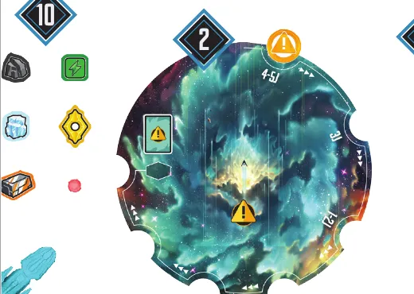
O tabuleiro de eventos (passo 2) e recursos da reserva (passo 10). Ilustração: manual Galápagos p. 4
Ponha o Ferro-Velho ao lado do tabuleiro principal p. 4.
Monte o mapa. Separe as 15 peças de planeta, embaralhe e empilhe viradas para baixo na parte de baixo do tabuleiro principal. Compre os planetas da tabela, embaralhe-os com as 6 peças da Base Aliada e ponha todas viradas para cima, uma de cada vez, a partir do canto superior esquerdo, da esquerda para a direita e de cima para baixo p. 4.
Ponha as luas. Uma lua órfã, virada para cima, em cada nebulosa. Embaralhe separadamente as 5 cores de lua planetária; em cada planeta, empilhe 3 luas da cor dele viradas para baixo e vire a pilha, para a lua de cima ficar visível. As que sobrarem ficam perto do tabuleiro, viradas para baixo, em pilhas de 3 p. 4.
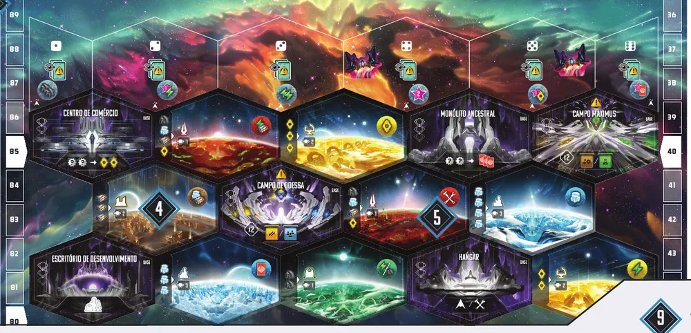
O mapa montado: nebulosas em cima, cada uma com número de dado e lua órfã; planetas e Bases Aliadas embaixo (passos 4 e 5). Ilustração: manual Galápagos p. 4 e 5
Invasores. Escolha uma carta de invasor da classe S (na primeira partida, o manual recomenda os Atacantes Vorticon), monte as figuras dela nos suportes e ponha a carta virada para cima ao lado do tabuleiro. Role 2 dados e ponha 1 figura da classe S em cada nebulosa de número igual (as duas podem cair na mesma). Escolha 1 invasor de cada classe A, B, C e D, pelo método que preferir (sorteio ou escolha), monte as figuras e deixe as cartas viradas para baixo, com as figuras perto. As outras cartas e figuras voltam para a caixa p. 3 e 4.
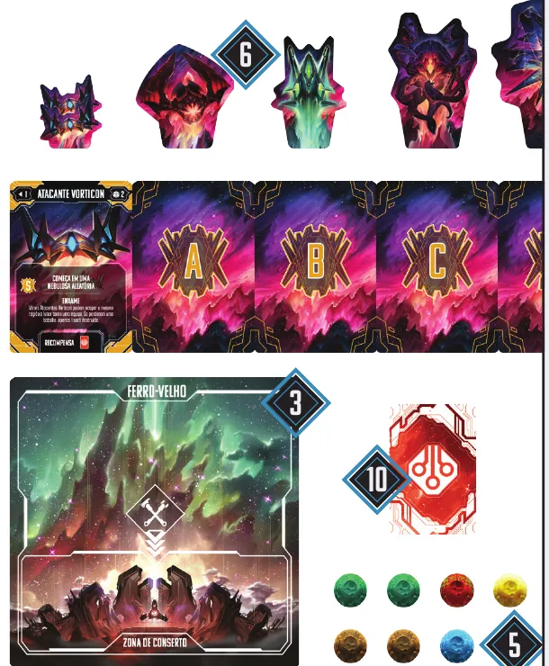
Invasores (passo 6): Atacantes Vorticon virados para cima e as cartas A, B e C para baixo (a D fica cortada na borda da ilustração); embaixo, o Ferro-Velho (passo 3) e as cartas táticas (passo 10). Ilustração: manual Galápagos p. 5
Duração. Ponha o marcador de terminus na trilha de PV: 50 PV (curta), 60 (média) ou 70 (longa) p. 5.
Módulos. Embaralhe cada um dos 4 baralhos de módulos e ponha nos espaços do alto do tabuleiro principal. Revele 3 de cada baralho, preenchendo a coluna embaixo dele p. 5.
Fichas das trilhas. Embaralhe as fichas de descoberta: 5 viradas para baixo em cada um dos 2 espaços marcados na trilha científica e mais 5 no espaço de descobertas do observatório, no topo dela. Embaralhe as fichas de supremacia e ponha 1, virada para cima, em cada um dos 3 espaços marcados na trilha de supremacia. O resto das duas volta para a caixa p. 5.
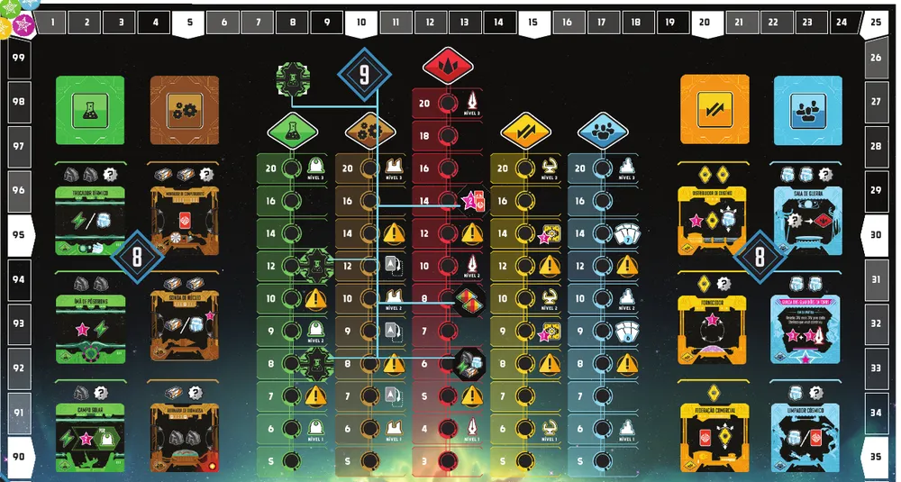
Colunas de módulos (passo 8) e trilhas de progresso com as fichas (passo 9). Ilustração: manual Galápagos p. 4 e 5
Reserva geral. Baralho de cartas táticas virado para baixo; cartas de desenvolvimento empilhadas por tipo, com as peças correspondentes perto; marcadores de dano e recursos p. 5.
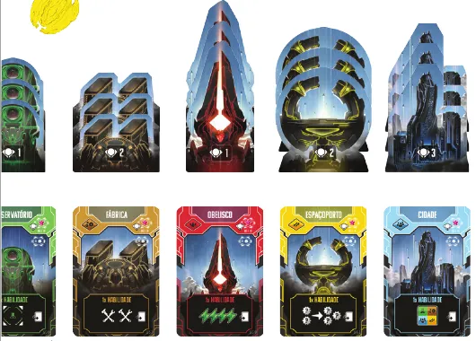
Peças e cartas de desenvolvimento na reserva (passo 10). Ilustração: manual Galápagos p. 4
Cada jogador
Pegue o material da sua cor: 1 tabuleiro de estação, 1 auxílio ao jogador, 6 transportadores, 1 caça, 1 nave de pesquisa, 1 cruzador pesado, 9 líderes, 6 dados, 5 marcadores de trilha e 1 marcador de PV p. 6.
Ponha a sua estação à sua frente. Ela tem dois lados; repare para que lado ficam os quatro módulos coloridos e deixe espaço livre desse lado, porque é dali que a estação cresce. Ponha 3 transportadores na Baía de Lançamento; as outras naves ficam na sua reserva pessoal, para construir depois p. 6.
Facção. Cada jogador recebe 3 cartas de facção e fica com 1; as outras voltam para a caixa. Pegue os recursos iniciais impressos no verso da carta, ponha nas áreas de reserva da estação e ponha a carta virada para cima na área de facção p. 6.
Aprimoramentos de nave. Pegue a peça exclusiva da sua facção e 1 de cada um dos 4 tipos neutros (transportador, caça, nave de pesquisa e cruzador pesado), embaralhados em pilhas separadas; o resto volta para a caixa. As 5 peças ficam na reserva pessoal p. 6.
Trilhas de progresso. Ponha 1 marcador no espaço de baixo de cada uma das 5 trilhas e avance 1 espaço em cada trilha marcada no canto superior esquerdo da sua carta de facção p. 6.
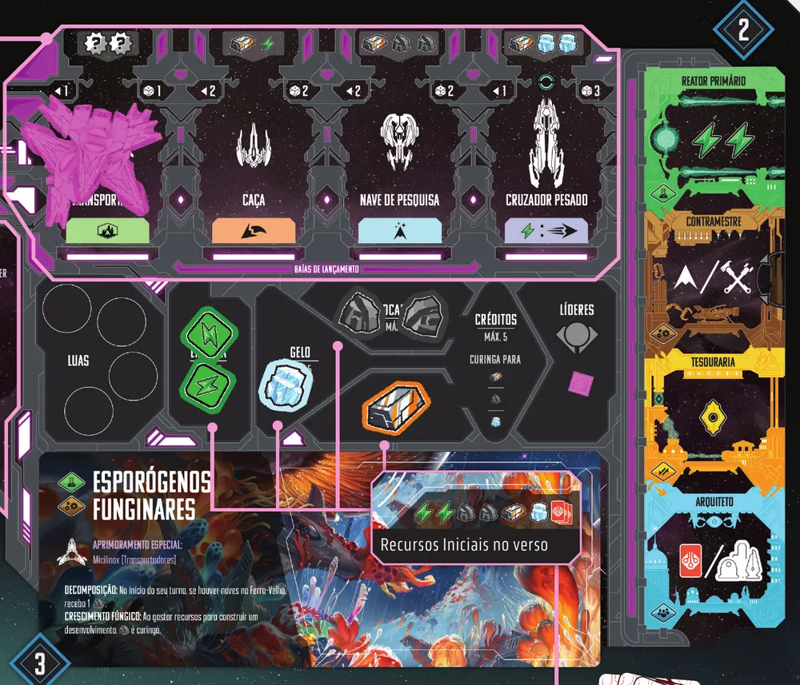
A estação: Baía de Lançamento no alto, áreas de luas, recursos e líderes no meio, carta de facção embaixo (passos 12 e 13) e módulos centrais à direita. Ilustração: manual Galápagos p. 7
Líderes. Ponha 1 líder seu em cada Base Aliada. Role um dado e ponha 2 líderes na nebulosa de número igual (mais de um jogador pode cair na mesma). O último vai para a área de líderes da estação p. 7.
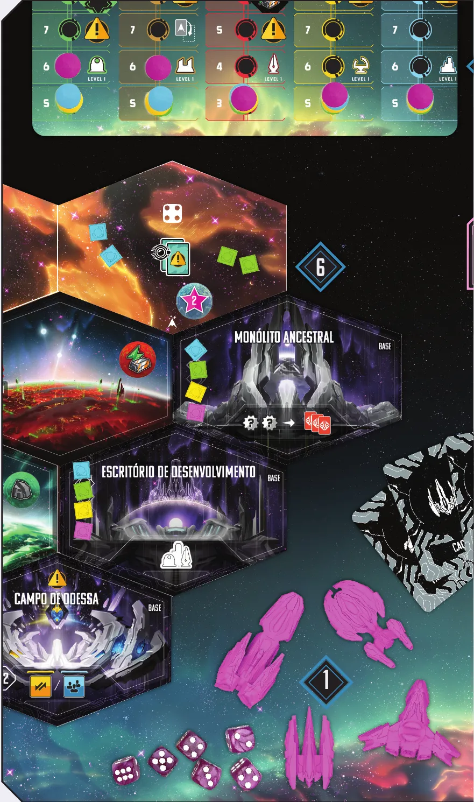
Líderes (passo 16): dois azuis e dois verdes na nebulosa sorteada por eles, um de cada cor em cada Base Aliada; marcadores nas trilhas (passo 15). Ilustração: manual Galápagos p. 6
O que fica na caixa. Cartas de facção, aprimoramentos neutros, fichas de descoberta e de supremacia que sobraram, cartas e figuras de invasor não escolhidas e o baralho de eventos não escolhido (p. 4 a 6). Peças de região especial e cartas de destino só entram nas regras opcionais p. 26.
Quem começa. Cada um rola os seus 6 dados; o dado mais alto começa, e um empate se decide no próximo dado mais alto. O jogador inicial põe o marcador de PV no 1º espaço da trilha de PV; em sentido horário, cada um põe o seu no próximo espaço vazio. A partida segue em sentido horário p. 7 e 8.
Antes de começar, confira: eventos no espaço certo; mapa e luas; invasor S no mapa e cartas A a D viradas; terminus; 3 módulos por coluna; fichas nas trilhas; cada jogador com 3 transportadores na Baía, recursos, marcadores e 9 líderes (6 nas Bases, 2 numa nebulosa, 1 na estação).
Numa partida de 3 jogadores, quantas peças de região ficam no mapa no começo?
Com 3 jogadores, compram-se 6 planetas, embaralhados com as 6 Bases Aliadas p. 4. Os outros entram com os eventos p. 20.
Comece a jogar em 6 minutos
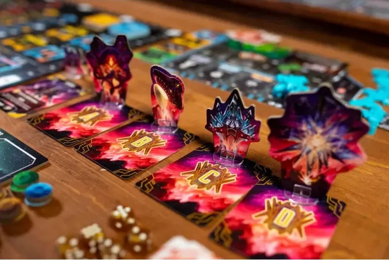
Imagem: Lucky Duck Games · edição em inglês
Meta: em 6 minutos de leitura, montar a mesa e jogar o seu primeiro turno sem abrir o manual.
A ideia do jogo
Você lidera uma facção que tenta erguer uma civilização na Margem. No seu turno, você faz uma de duas coisas: Lançar uma nave da estação para uma região do mapa e usar o que ela oferece, ou Retornar à Estação com todas as naves, que então ativam os módulos da estação. Boa parte dos pontos vem das trilhas de progresso, que você sobe ao ganhar módulos e construir desenvolvimentos. A partida acaba quando alguém alcança o terminus na trilha de PV p. 8, 9, 12 e 19.
Palavras do jogo
Região ativa: a região para onde você Lançou a nave neste turno p. 9.
Adjacente ou vizinha: região ao lado; o alcance conta regiões, e a vizinha é alcance 1 p. 15 e 24.
Viagem: habilidade que deixa a nave entrar em nebulosa p. 15.
Mira: o menor valor que cada dado seu pode mostrar em batalha; é o número das suas naves na região ativa, mais bônus de aprimoramentos e cartas p. 22.
Escudo: nave com escudo livre, ao sofrer dano, recebe um marcador nele e fica; sem escudo livre, vai para o Ferro-Velho p. 23.
Zona de Conserto: parte de baixo do Ferro-Velho; nave consertada vai para lá p. 23.
Operações Táticas: o que você pode fazer ao perder uma batalha, comprar 1 carta tática ou usar a lua alocada ali p. 22.
Ação livre: ação extra, como recrutar líderes da sua cor de regiões onde você tem naves ou alocar uma lua num módulo p. 13 e 14.
Recursos bônus: recursos postos em regiões por eventos ou outros efeitos; quem tem nave ali pode pegá-los p. 14.
Fichas de descoberta e de supremacia: bônus das trilhas de ciência e supremacia, descartados pelo benefício impresso p. 14 e 19.
Cartas de sustentação: cartas táticas que ficam em jogo até o seu Retorno à Estação p. 14.
Monte a mesa
A montagem completa, com figuras, está em Montar a mesa passo a passo, no alto da página. O essencial:
Mapa com as 6 Bases Aliadas e 4, 6 ou 8 planetas; luas por cima p. 4.
Invasor da classe S nas nebulosas sorteadas com 2 dados p. 4.
Cada jogador: estação, 3 transportadores na Baía de Lançamento, recursos da facção, líderes no mapa e na estação p. 6 e 7.
Seu primeiro turno
Sem naves no mapa e com 3 transportadores prontos, você Lança. O turno de Lançamento tem quatro etapas p. 9:
Lançar uma nave. Sem naves suas no mapa, é um primeiro Lançamento: vai para qualquer região desocupada, sem invasor e sem nave de jogador. Nave sem Viagem (o transportador não tem) não entra em nebulosa. Para uma Base Aliada, só se você puder fazer a ação dela p. 9 e 15.
Ativar a região. Planeta: pegue a lua do topo e ponha na área de luas da estação. Base Aliada: faça a ação dela p. 10.
Ataque Invasor. Um invasor ao alcance da região ativa (o alcance está na carta dele) se move para lá. Havendo vários, quem joga escolhe um; escolhido um da classe S, vêm todos os da classe S ao alcance p. 11.
Batalha. Você e um invasor na região ativa: cada lado rola os dados das suas armas, e o maior dado vence p. 11, 21 e 22.
No fim do turno, descarte os recursos acima dos limites da estação p. 9.
Ainda não precisa saber
Lançamentos subsequentes, Bases Aliadas e luas: etapa 1. Retorno à Estação e módulos: etapa 2. Naves, desenvolvimentos e trilhas: etapa 3. Batalha completa e consertos: etapa 4. Eventos e pontuação final: etapa 5.
Como a partida acaba
Quando o marcador de PV de alguém alcança ou passa o terminus, quem está jogando termina o turno e todos jogam mais 1 turno, inclusive quem provocou o fim. Depois vem a pontuação final p. 25.
Prefere ver? Partida resumida do canal Duque Board Games. Ele complementa este guia; em caso de diferença, vale o manual.
ANDROMEDA'S EDGE - Gameplay resumida, canal Duque Board Games · abrir no YouTube
0Antes de tudo: o que é este jogoOpcional
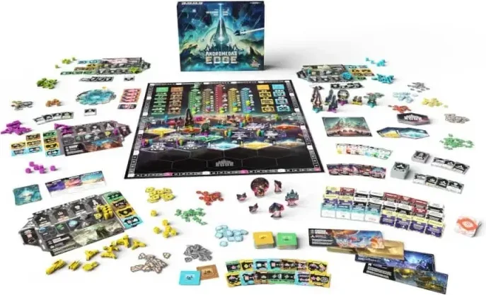
Imagem: Lucky Duck Games · edição em inglêsAbrir esta seção
Um jogo de alocação de trabalhadores em que os trabalhadores são naves (página oficial da Cardboard Alchemy). Não há rodadas: cada um joga um turno, em sentido horário p. 8. Cada nave lançada é uma ação no mapa agora e um módulo ativado depois, quando ela volta p. 9 e 12. Invasores e eventos atrapalham o caminho p. 11 e 20.
1Como este guia ensinaOpcional
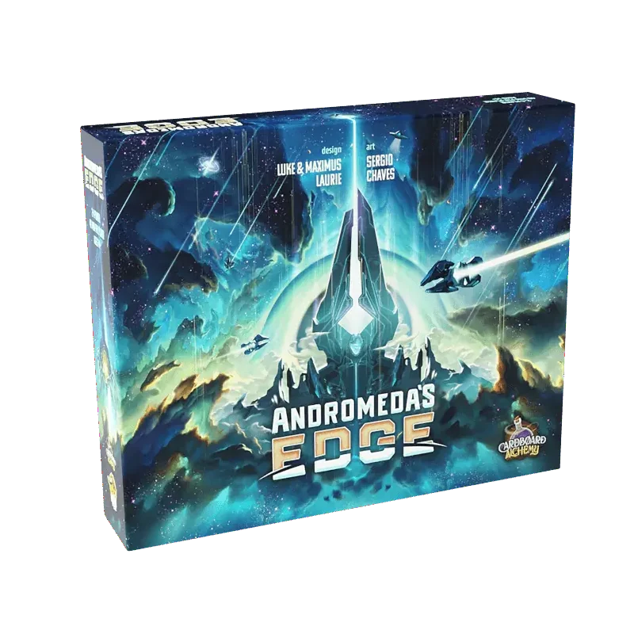
Imagem: Lucky Duck Games · edição em inglêsAbrir esta seção
Cinco etapas: Lançamento; Retorno e módulos; naves, desenvolvimentos e trilhas; batalha; eventos e fim. Cada uma traz o porquê, o passo a passo, um exemplo resolvido e tarefas de múltipla escolha; casos especiais ficam em blocos de regra adicional. No fim, uma avaliação e uma folha de consulta.
2Etapa 1: o turno de Lançamento
Por que funciona assim
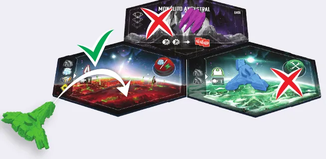
Primeiro Lançamento: a nave verde não pode ir para a região com nave roxa nem para a que tem nave azul; vai para o planeta desocupado. Ilustração: manual Galápagos p. 9
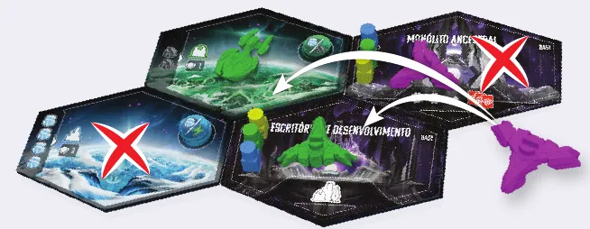
Lançamento subsequente: a nave roxa vai para regiões ao alcance de outra nave roxa; as marcadas com X já têm nave roxa ou estão fora do alcance. Ilustração: manual Galápagos p. 9
As ações das Bases Aliadasp. 10
Base Aliada
Ação
Monólito Ancestral
Gaste 2 recursos quaisquer e compre 3 cartas táticas
Centro de Comércio
Gaste 2 recursos quaisquer e receba 2 créditos
Campo Maximus
Avance o marcador de eventos 1 espaço; compre 1 ou 2 módulos de ciência ou de indústria, pagando o custo impresso no tabuleiro para a posição de cada um p. 10, 16 e 28
Campo de Odessa
O mesmo, com módulos de comércio ou de civilização
Hangar
Pague o custo de 1 nave nova (vai para a Baía de Lançamento) ou faça 1 ação de conserto
Escritório de Desenvolvimento
Pague recursos e líderes e construa um desenvolvimento num planeta não desenvolvido onde você tenha transportador
Recursosp. 7. Energia, titânio, gelo, nanocarbono e créditos ficam na estação; créditos valem como titânio, gelo ou nanocarbono. Quando o custo pede "qualquer recurso", carta tática também serve p. 28. No fim do seu turno, descarte o que passar dos limites p. 9.
Sobre a edição: LimitesRegra adicional: Limite de luasRegra adicional: Base Aliada sem tudo na mãoVer um exemplo resolvidoPratique esta etapa: exercícios com respostas
3Etapa 2: Retorno à Estação e módulos
Por que funciona assim
Os módulos centraisp. 12
Módulo
Ao ativar
Reator Primário (ciência)
Receba 2 energias e ative quantos outros módulos de ciência quiser
Contramestre (indústria)
Pague o custo de 1 nave nova ou faça 1 conserto
Tesouraria (comércio)
Receba 1 crédito
Arquiteto (civilização)
Compre 1 carta tática, ou construa um desenvolvimento onde você tenha transportador
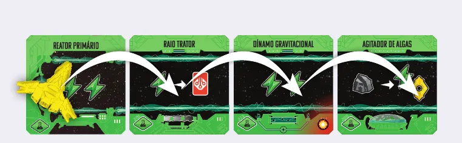
Uma única nave no Reator Primário ativa todos os módulos de ciência não danificados da fileira. Ilustração: manual Galápagos p. 13
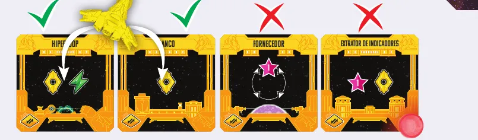
Fileira de comércio: o Hiperloop e o Banco podem ser ativados; o Fornecedor, com o espaço de lua de entrada vazio, e o Extrator de Indicadores, com marcador de dano, não. Ilustração: manual Galápagos p. 13
Comprar módulosp. 16. Sempre que receber 1 ou mais módulos:
Escolha nas colunas indicadas. Se houver um traço acima do ícone do módulo na ação, ele não é gratuito: pague o custo impresso no tabuleiro para a posição dele.
Ponha cada módulo na fileira do tipo dele, com 1 marcador de dano por ícone de dano no canto inferior direito.
Avance 1 espaço na trilha do tipo do módulo, a cada módulo.
No fim da ação, deslize os módulos das colunas para baixo e revele novos.
Regra adicional: Campo com um módulo sóRegra adicional: Luas nos módulosRegra adicional: Meia-lua na indústriaVer um exemplo resolvidoPratique esta etapa: exercícios com respostas
4Etapa 3: naves, desenvolvimentos e trilhas
Por que funciona assim
As naves básicasp. 7 e 15
Nave
Alcance
Armas
Habilidades
Custo
Transportador
1
1
Povoar
2 recursos quaisquer
Caça
2
2
Ataque
1 titânio e 1 energia
Nave de pesquisa
2
2
Viagem
1 titânio e 2 nanocarbonos
Cruzador pesado
1
3
Salto, escudo
1 titânio e 2 gelos
Viagem: entra em nebulosa ao ser Lançada ou ao se mover. Ataque: num primeiro Lançamento, pode ir para região ocupada. Salto: ao ser Lançada ou ao se mover, 1 energia dá alcance infinito. Povoar: permite desenvolver um planeta. Nave construída vai para a Baía de Lançamento p. 15.
Sobre a edição: Custos das navesSobre a edição: Como as naves se movem
Constroem desenvolvimento o Escritório de Desenvolvimento p. 10 e o Arquiteto p. 12.
PV na construçãop. 18. Conte os líderes no planeta e em todas as regiões adjacentes: líderes de todos os jogadores ainda no mapa, o número impresso no novo desenvolvimento e o dos desenvolvimentos adjacentes. Máximo de 10 PV.
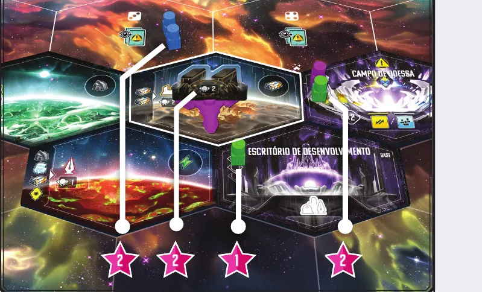
O jogador roxo constrói uma fábrica e conta 2 líderes azuis na nebulosa vizinha, 2 da fábrica, 1 verde no Escritório de Desenvolvimento e 2 no Campo de Odessa: 7 PV. Ilustração: manual Galápagos p. 18
Desenvolvimento
Trilha
Habilidade de uso único p. 18
Observatório
Ciência
Olhe a pilha do espaço de descobertas do observatório e reivindique 1 ficha
Fábrica
Indústria
2 ações de conserto
Espaçoporto
Comércio
Gaste 2 recursos quaisquer e receba 3 recursos quaisquer
Cidade
Civilização
1 módulo disponível qualquer, sem custo
Obelisco
Supremacia
4 energias
Regra adicional: Desenvolvimento não ocupa
As trilhas de progressop. 19. Sobem com módulos, desenvolvimentos, fichas e, na supremacia, batalhas vencidas e cartas táticas. Todas têm espaços de desenvolvimento (Nível 1, 2 e 3, que valem no fim) e de evento (quem os alcança avança o marcador de eventos 1 espaço). E cada uma tem um bônus próprio:
Trilha
Espaço especial
Efeito
Ciência
Ficha de descoberta
Olhe a pilha em segredo e reivindique 1; use-a depois, como ação livre
Indústria
Aprimoramento de nave
Ponha uma das suas peças de aprimoramento no espaço da nave na Baía de Lançamento
Supremacia
Ficha de supremacia
O primeiro a chegar pega a ficha; se ela já saiu, marque 2 PV
Comércio
Cofre
No fim, cada recurso não gasto vale o maior bônus de cofre alcançado
Civilização
Limite de cartas táticas
O limite da mão sobe; compre cartas até o novo limite
Sobre a edição: Números das trilhasRegra adicional: Aprimoramento de naveVer um exemplo resolvidoPratique esta etapa: exercícios com respostas
5Etapa 4: invasores, batalha, dano e conserto
Por que funciona assim
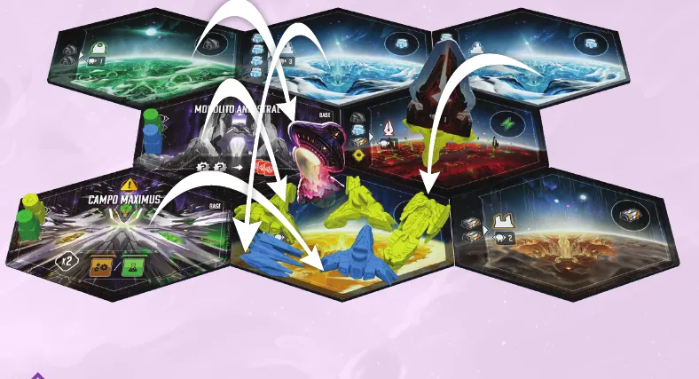
Escalada no exemplo do manual: o amarelo leva um transportador e salta com o cruzador pesado; o azul leva um transportador e um caça. Ilustração: manual Galápagos p. 24
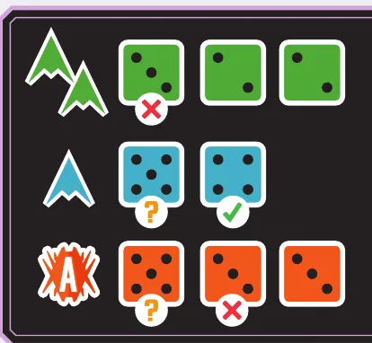
O resultado: o verde, com 3, 2 e 2, perde; o azul (5 e 4) e os invasores (5, 3 e 3) empatam no 5, e o azul vence no segundo dado, 4 contra 3. Ilustração: manual Galápagos p. 22Regra adicional: Mira dos invasoresRegra adicional: Recompensa da classe SRegra adicional: Operações TáticasRegra adicional: Batalha que acaba antesRegra adicional: Invasores no mapa
Dano e consertop. 23. Eventos e cartas também danificam módulos: 1 marcador num módulo não danificado à sua escolha, se houver, central inclusive. Cada ação de conserto (Hangar, Contramestre, lua com ícone de conserto, Fábrica) é uma opção:
Nave no Ferro-Velho: passe-a para a Zona de Conserto. Ela só volta ao mapa depois do seu Retorno, mas nele ativa módulo.
Recarregar escudos: tire 1 marcador de um escudo de nave na Baía de Lançamento.
Módulo: tire 1 marcador de dano dele.
Nada para consertar: receba 1 PV.
Ver um exemplo resolvidoPratique esta etapa: exercícios com respostas
6Etapa 5: eventos e fim da partida
Imagem: Lucky Duck Games · edição em inglêsPor que funciona assimSobre a edição: Pilha de planetas e baralho de eventos vazios
Fim da partidap. 25. Quando o marcador de PV de alguém alcança ou passa o terminus, tire o marcador de eventos da trilha: não há mais eventos. Se isso acontecer durante um evento, termine de resolvê-lo (Apêndice, p. 14). Quem está jogando termina o turno, e cada jogador joga mais 1, inclusive quem provocou o fim. Então:
Trilhas: os PV ao lado do seu marcador em cada uma das 5.
Desenvolvimentos: cada um vale conforme o nível mais alto que você alcançou na trilha dele: Nível 1, 5 PV; Nível 2, 7; Nível 3, 10.
Módulos danificados: menos 2 PV cada. Nave danificada não tira PV.
Bônus de cofre: cada recurso não gasto, cartas táticas inclusive, vale o maior bônus de cofre alcançado na trilha de comércio.
Módulos de civilização: os PV de fim da partida dos não danificados.
Líderes: 1 PV por líder na estação.
Outros: habilidades de facção.
Desempate: mais módulos; depois, mais recursos; persistindo, vitória compartilhada p. 25.
Sobre a edição: Luas no cofreVer um exemplo resolvidoPratique esta etapa: exercícios com respostas
7Situações especiaisOpcional
Imagem: Lucky Duck Games · edição em inglêsAbrir esta seçãoRegra adicional: Ações livresRegra adicional: Alocar luaRegra adicional: Cartas táticasRegra adicional: Efeitos ao mesmo tempoSobre a edição: Lançamento subsequente para região com invasorSobre a edição: AdjacênciaRegra adicional: Regiões especiais (opcional)Regra adicional: Cartas de destino (opcional)Regra adicional: Modo 2x2 (opcional)Dica
8Avaliação finalOpcional
Imagem: Lucky Duck Games · edição em inglêsAbrir esta seção
Responda sem consultar. Cada resposta diz o que reler.
1. Você tem um transportador no mapa e quer Lançar um cruzador pesado (alcance 1) para uma região a 3 regiões dele. Como?
Salto: 1 energia dá alcance infinito p. 15. Releia a etapa 1 e a tabela de naves da etapa 3.
2. No começo do seu turno, a Baía de Lançamento está vazia. O que você faz?
O Retorno é obrigatório p. 12. Releia a etapa 2.
3. No Retorno, você quer ativar 3 módulos de ciência e tem 1 nave e 3 energias. Como?
Ciência se ativa pelo Reator, com nave p. 12. Releia a etapa 2.
4. Seu único transportador é a sua última nave. Pode virar desenvolvimento?
A última nave não pode criar desenvolvimento p. 17. Releia a etapa 3.
5. Você tem 2 naves na região ativa e uma carta que dá +1 de mira. Quais resultados rerrola?
Mira 3: rerrolam-se os dados abaixo de 3 p. 22. Releia a etapa 4.
6. O marcador de eventos chega ao fim da trilha no meio do seu turno. Quando a carta é resolvida?
O planeta é revelado na hora; a carta, no fim do turno p. 20. Releia a etapa 5.
7. Fim da partida com 3 módulos danificados. Quanto perde?
2 PV por módulo p. 25. Releia a etapa 5.
9Para consultar durante a partida
Imagem: Lucky Duck Games · edição em inglês
Turno: Lançar ou Retornar (obrigatório com a Baía vazia), mais ações livres; no fim, descarte excessos p. 9 e 14.
Lançamento: 1. Lançar (primeiro: região desocupada; subsequente: ao alcance de nave sua, sem nave sua; nebulosa só com Viagem; Base só se puder agir). 2. Ativar (planeta: lua ou recurso impresso; nebulosa: lua e 2 eventos, 1 no topo, 1 no fundo; Base: ação). 3. Ataque Invasor. 4. Batalha (p. 9 a 11).
Retorno: 1. Ativar módulos (nave do mapa ou da Zona de Conserto; energia se a fileira já tem nave; ciência pelo Reator, com nave; danificado não ativa). 2. Devolver as naves; tirar dano de naves com escudo. 3. Descartar energia usada e cartas de sustentação p. 12 e 13.
Batalha: Escalada, Diplomacia, Preparações (armas + 1 por desenvolvimento + 1 por energia, até 6 dados; mira = naves + bônus, até 5), Rolagem, Resultado (maior dado; vencedor +1 supremacia e recompensa; derrotados, Operações Táticas), Dano (p. 21 a 23).
Conserto: nave para a Zona de Conserto; 1 escudo; 1 dano de módulo; nada a consertar, 1 PV p. 23.
Evento: planeta na hora; no fim do turno, PV da trilha (−1 por módulo danificado), invasor, efeito, reinício p. 20.
Fim: trilhas; desenvolvimentos 5/7/10; −2 por módulo danificado; cofre; civilização; 1 por líder; facção. Desempate: módulos, recursos p. 25.
Andromeda's Edge, Apêndice, Galápagos, no mesmo arquivo, consultado em 09/11/2026.
Página oficial, Cardboard Alchemy, https://cardboardalchemy.com/andromedas-edge/, consultada em 09/11/2026. Os números de lá (1 a 5 jogadores, 40 a 200 minutos, 14+) são do jogo com a expansão Escalation.
Regras conferidas no livro "Regras do Jogo" da edição brasileira de Andromeda's Edge (Galápagos, código AED001, versão 1.0), baixado da biblioteca de downloads da Asmodee Brasil, e no Apêndice da mesma edição, que traz as perguntas frequentes. O jogo é de Luke Laurie e Maximus Laurie, da Cardboard Alchemy. As páginas citadas são as do livro de regras, de 1 (capa) a 28; quando a fonte é o Apêndice, o texto diz.